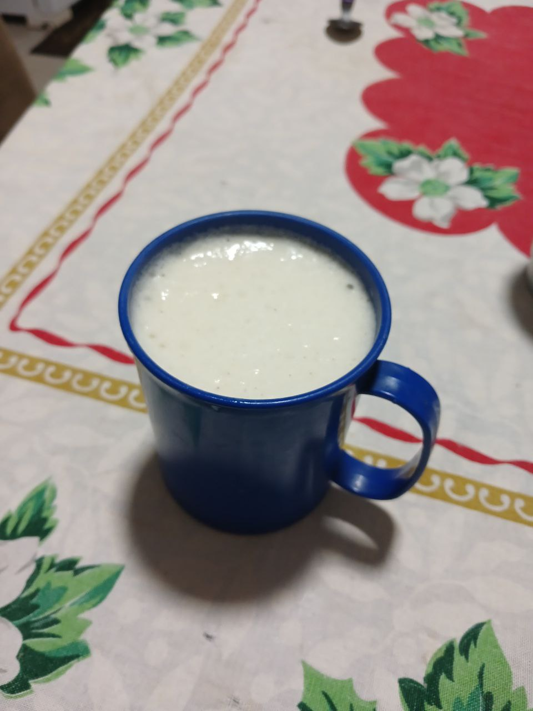

Vitamina de banana com whey protein do Léo

O whey protein é uma excelente opção proteica para quem faz dieta ou precisa ingerir os nutrientes necessários e tem uma vida corrida.
Por isso, inclui-lo em uma vitamina é uma opção prática e saborosa para a sua refeição! Confira os ingredientes necessários
- Banana (a quantia que sua dieta permitir) ou outra fruta
- Leite da origem que preferir (utilizo leite desnatado)
- Whey protein (uso da marca Growth sabor cookies)
- Gelo a vontade
Modo de preparo:
- Adicione a banana no liquidificador, de preferência em pedaços
- Em seguida, adicione 240ml (ou mais) de leite, aqui uso 240ml devido a quantia que minha dieta permite
- Acrescente de 15 a 20 gramas de whey protein do sabor que preferir
- Acrescente gelo caso queira uma bebida mais cremosa e gelada
Seguiu esses passos, a sua vitamina está pronta!
Uma dica valiosa: vocês podem congelar a banana algumas horas antes para deixar a vitamina mais cremosa
Início